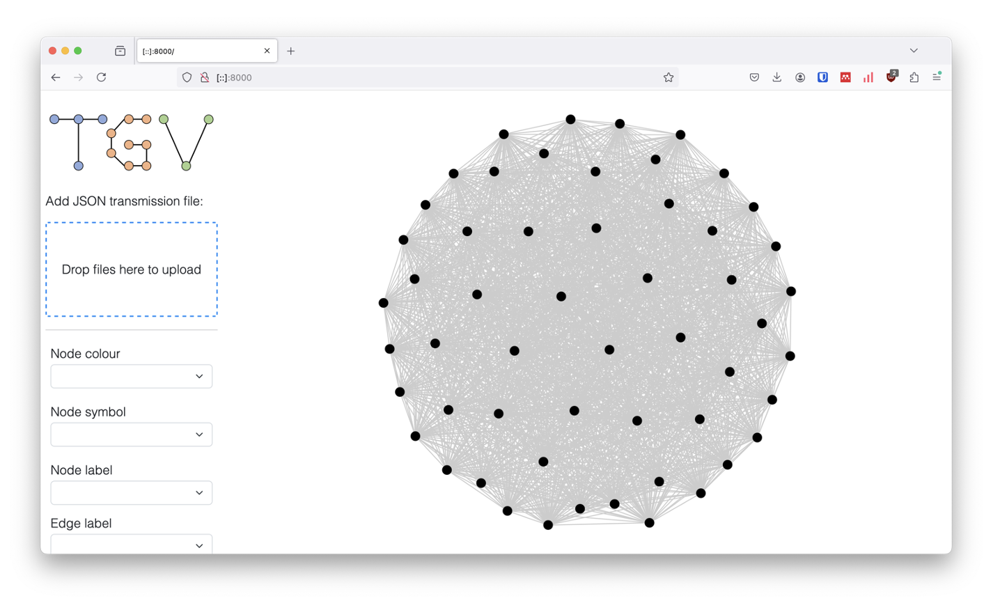
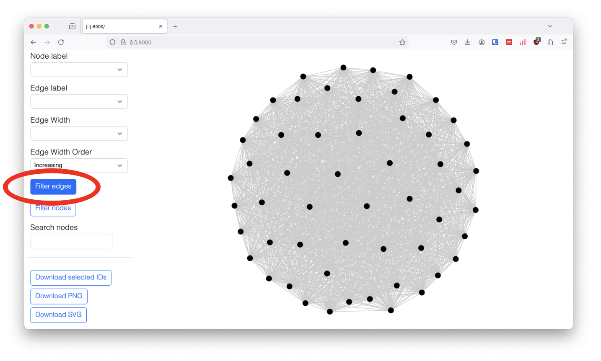
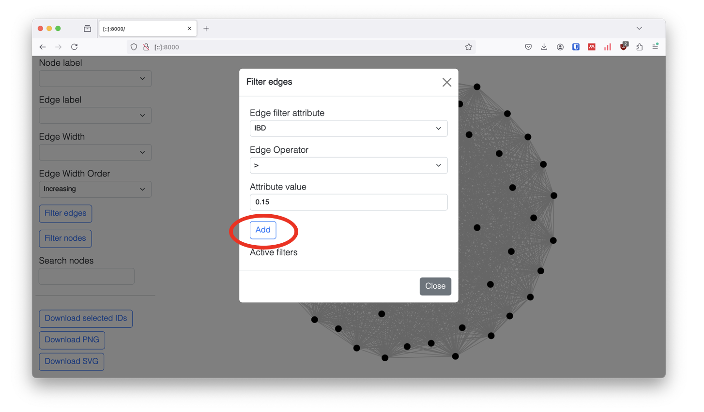

Usage
Welcome to the transmission graph viewer!
Drag and drop your transmission graph json file to the upload box to
the left and see the graph. You can also upload meta data in CSV format
to colour and label the nodes. Just make sure a column 'Node' is present
which contains the same IDs as represented in the graph.
To for download the IDs from a subset, use the cmd/ctrl key and click and drag and hit the
download button.
Don't have data yet? Download
this example json
file and drag it into the box on the top left.
After it loads you should have a graph that looks like this:

We can alter the minimum relatedness threshold to remove edges with a relatedness below a certain threshold.
To do this scroll down and select the "Filter edged" button.

This will bring up a pop-up where you can enter the minimum relatedness threshold as shown below.
